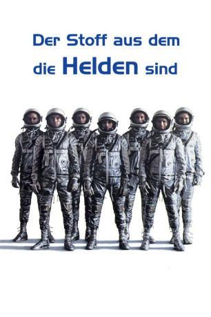

Alternativ: The Right Stuff
Auszeichnungen: 4 Oscars gewonnen für 4 Oscars nominiert gesehen am 20.02.2016
gesehen am 20.02.2016
 
 IMDB-Wertung: 7.9 / 10
IMDB-Wertung: 7.9 / 10  Metascore:
Metascore: 
Der Film von Philip Kaufman aus dem Jahr 1983 basiert auf dem gleichnamigen Roman von Tom Wolfe. Er erzählt die Geschichte der Luft- und Raumfahrt vom Beginn des Überschallflugs bis zum Anfang der amerikanischen Eroberung des Weltraums. Der Film wurde mit vier Oscars ausgezeichnet.
Jahr: 1983
Dauer: 193 Minuten
FSK: 12
Land: USA Studio: Warner Bros.Tonspuren: DD5.1 - ,
Untertitel:
Auflösung: 1080p (1920x1080) Größe: 14540 MB
Genre: Abenteuer, Biographie, Drama, Geschichte
Regisseur:  Philip Kaufman
Philip Kaufman
Drehbuch: Philip Kaufman, Tom Wolfe
Soundtrack: Bill Conti
Darsteller:
 Sam Shepard als Chuck Yeager
Sam Shepard als Chuck Yeager Scott Glenn als Alan Shepard
Scott Glenn als Alan Shepard Ed Harris als John Glenn
Ed Harris als John Glenn Dennis Quaid als Gordon Cooper
Dennis Quaid als Gordon Cooper Fred Ward als Gus Grissom
Fred Ward als Gus Grissom Barbara Hershey als Glennis Yeager
Barbara Hershey als Glennis Yeager Veronica Cartwright als Betty Grissom
Veronica Cartwright als Betty Grissom Pamela Reed als Trudy Cooper
Pamela Reed als Trudy Cooper Scott Paulin als Deke Slayton
Scott Paulin als Deke Slayton Lance Henriksen als Wally Schirra
Lance Henriksen als Wally Schirra Donald Moffat als Lyndon B. Johnson
Donald Moffat als Lyndon B. Johnson Levon Helm als Jack Ridley / Narrator
Levon Helm als Jack Ridley / Narrator Mary Jo Deschanel als Annie Glenn
Mary Jo Deschanel als Annie Glenn Scott Wilson als Scott Crossfield
Scott Wilson als Scott Crossfield Kathy Baker als Louise Shepard
Kathy Baker als Louise Shepard Royal Dano als Minister
Royal Dano als Minister David Clennon als Liaison Man
David Clennon als Liaison Man Jim Haynie als Air Force Major
Jim Haynie als Air Force Major Jeff Goldblum als Recruiter
Jeff Goldblum als Recruiter Harry Shearer als Recruiter
Harry Shearer als Recruiter John P. Ryan als Head of Program
John P. Ryan als Head of Program John Dehner als Henry Luce
John Dehner als Henry Luce David Gulpilil als Aborigine
David Gulpilil als Aborigine O-Lan Jones als Girl at Pancho's
O-Lan Jones als Girl at Pancho's Lyndon Johnson als Himself - Standing Behind JFK , archive footage, uncredited
Lyndon Johnson als Himself - Standing Behind JFK , archive footage, uncredited John F. Kennedy als Himself , archive footage, uncredited
John F. Kennedy als Himself , archive footage, uncredited Christopher Kriesa als Mission Control Room Man , uncredited
Christopher Kriesa als Mission Control Room Man , uncreditedDatei: X:\1983\Stoff aus dem die Helden sind, Der (1983, FSK12, 1920x1080).mkv seit 22.05.2015
Festplatte: HD 1980-1986
 Es gibt insgesamt 35 Filme in der Gruppe '1983'
Es gibt insgesamt 35 Filme in der Gruppe '1983'